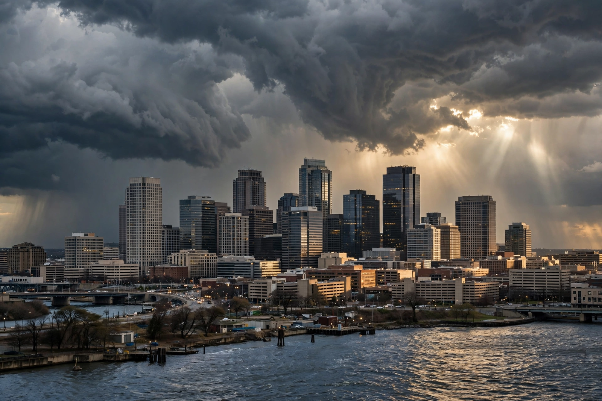

Top stories
Top stories and live coverage from NBC News

NBC News' homepage combines reporting from its television news division — Nightly News, Today, Meet the Press and Dateline — with digital-first coverage, live blogs and video.
World
Global headlines from NBC's foreign bureaus
International reporting anchored from London and bureaus worldwide.
U.S. News
National stories, weather and investigations
Domestic coverage including the network's investigative unit.
Politics
Washington and the campaign trail
Politics coverage feeding Meet the Press and the nightly broadcasts.
Health
Medicine, wellness and public health
Health reporting is a standing NBC vertical.
Latest & most read
- Live: developing stories blog
- Nightly News: tonight's broadcast rundown
- Meet the Press: this week's guests in context
About
Background on this news organisation: Wikipedia article.